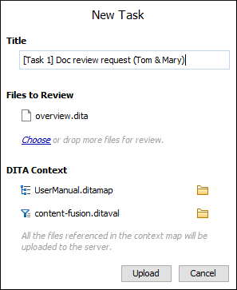
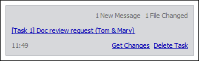

Content Fusion Tasks Manager View
To open the Content Fusion Task Manager view, click the
 Show Content Fusion Tasks
Manager toolbar button (or go to ). If neither of them is there, see Installing the Content Fusion Connector Add-on.
Show Content Fusion Tasks
Manager toolbar button (or go to ). If neither of them is there, see Installing the Content Fusion Connector Add-on.
By default, the Content Fusion Task Manager view is displayed to the right of the main editing panel. This view is where you can create tasks, manage them, attach documents, and upload them to the Oxygen XML Editor server.
Connecting to the Server
If this is your first time using it, you first need to configure your Enterprise server address. Then click the Connect button to open the Oxygen XML Editor interface in your default browser, click SIGN UP, and follow the instructions to create your account. When finished, click Authorize.
If you already have an account but you are not connected, click the Connect button to open the Oxygen XML Editor interface in your default browser, enter your credentials, and click Authorize.
Tasks Manager View
The Content Fusion Tasks Manager view contains the following actions and components:
- User Name drop-down menu
-
Once connected and authorized, your user name will appear in the upper right corner of the view. If you hover over your name, you can see what email address is associated with the account. The drop-down menu offers the following actions:
- Refresh Tasks
- Forces a refresh to synchronize the information in the view with the Oxygen XML Editor server.
- Go to my Account
- Opens your profile information in your default browser.
- Connection Status
- Provides information such as the server address, plugin version, and connection status. This option can be used for troubleshooting purposes. For more information, see Information Presented by the Content Fusion Connector Add-on is Not Up to Date.
- Help
- Opens the Oxygen XML Editor user guide in your default browser.
- Preferences
- Opens the Oxygen Content Fusion Connector preferences page where you can change the server address.
- Disconnect
- Signs you out of Oxygen XML Editor. To re-establish the connection, you need to click Connect and then Authorize.
- New Task box
-
Use this box to create new tasks. Drag files from the Project view, DITA Maps Manager, or your system file explorer and drop them in this box (or click the Choose link to select files) to add the files to a new task.
Figure 2. New Task Box (for DITA Projects) - Title
- The task title will help you differentiate between multiple tasks so each one should be unique.
- Files to Review
- You will see all of the attached files in this section. There are several ways to add files to the task. For more details, see Creating Tasks and Uploading Files.
- DITA Context (for DITA projects only)
-
- Root Map
- If you are working with a DITA project, context root
map is used to resolve the references and defined keys so that they
are displayed properly for the Reviewers and they can see the
hierarchy of all the attached files in the Oxygen XML Editor
interface. When you add DITA files to the task, the root
map that is specified in the toolbar of the DITA Maps
Manager is automatically detected but you can also drag
a DITA map file and drop it in this section or click to the
 Choose context root map button to select a map.
Choose context root map button to select a map. - DITAVAL File
- If you are working with a DITA project, you can specify a DITAVAL
file so that the content in the uploaded DITA topics is filtered based
upon the conditional profiling attribute values defined in the DITAVAL
file. You can drag a DITAVAL file and drop it in this section or click
to the Choose DITAVAL button to
select a file. If a condition set is selected in the DITA Maps
Manager, the corresponding DITAVAL file will automatically be selected
in the task.
- Also include all files that are referenced within the attached files (non-DITA files only)
- If you have only attached non-DITA XML files (and a DITA map is not selected as the context root map in the DITA Maps Manager), this option becomes available. If selected, snapshots of any files that are referenced within any of the attached Files to Review will also be attached so that Reviewers will have access to the referenced content. Also, when this option is selected, you can click the Next button to preview the referenced files and you can choose to remove any that you do not want uploaded.
- Upload/Cancel buttons
- Once you are finished adding files and entering a task summary, use the Upload button to finalize the task and upload it to the Oxygen XML Editor server. Use the Cancel button to cancel the task creation process.
- Tasks
-
Each created task is listed with its own box in the view. In this box, you will see the task name, the time it was created, and notifications when messages are added in the Oxygen XML Editor interface or when a file is changed (the background color of the task box also changes when a new message or file change is detected). Click on the name of a task to open the Task Details page in your default browser where you can view the details of the task, share a link to it with Reviewers, view and add messages, and monitor the task progress. When viewing new messages, once you have stayed on the task details page for at least 3 seconds, the new message notification in the task box will disappear.
Figure 3. Task Display Box  - Contextual Menu
-
If you right-click a task box, the contextual menu offers the following actions:
- Open task in browser
- Opens the task in the Task Details page in your default browser.
- Copy task link
- Copies the task link to the system clipboard. You can then use any common messaging application to send this copied link to Reviewers. You can also paste the copied link in any browser to open the task details.
- Get changes
- Opens the Get Changes merge tool that is used to automatically merge all the changes back into the original documents.
- Delete task
- Removes the task from the view and the Oxygen XML Editor server.
- Refresh tasks
- Refreshes the Content Fusion Tasks Manager view.